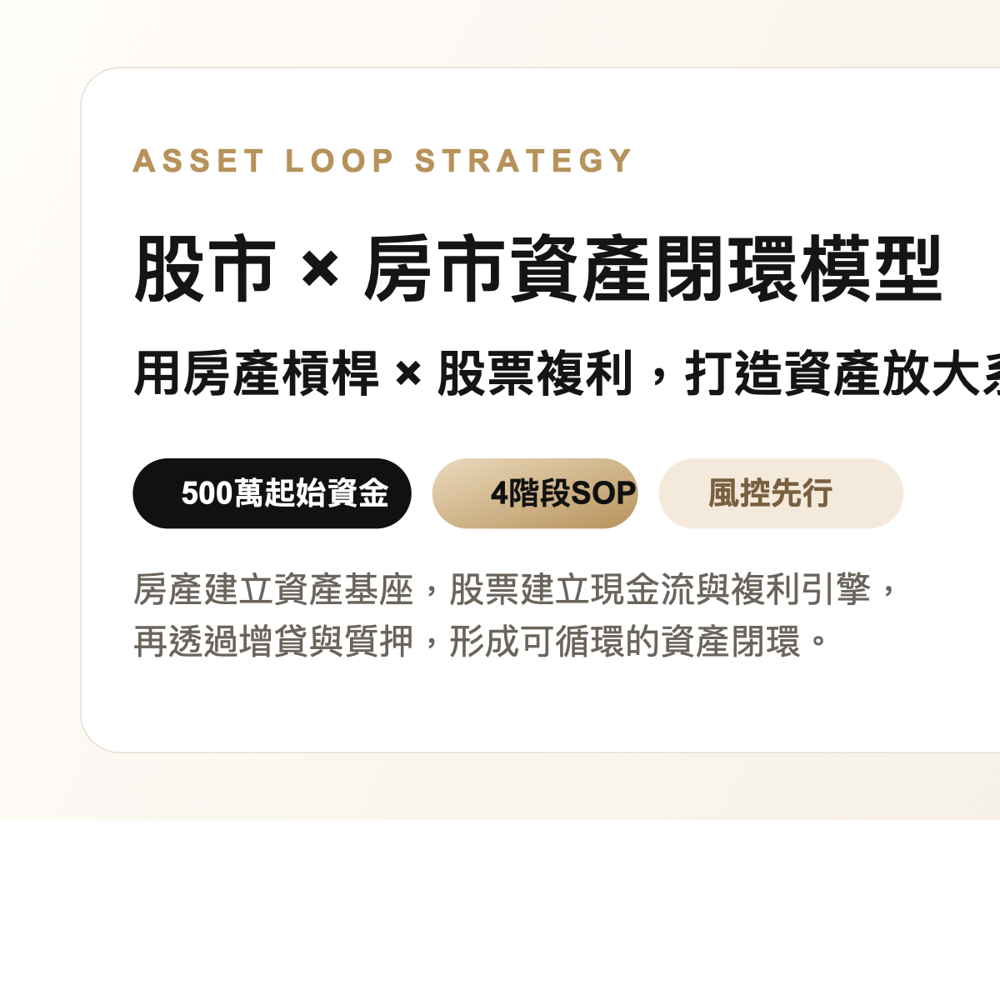

用房產槓桿 × 股票複利，打造可複製的資產閉環系統
這套模型的核心，不是單押房市，也不是單押股市，而是把房產的低利長槓桿，和股票的高流動性、股息現金流與淨值成長結合起來，形成一套可擴張的資產放大框架。

一眼看懂，這套系統怎麼運作
用一句話講，就是先用房產建立資產基座，再把增貸資金導入股票現金流與成長引擎，最後用質押與轉貸做下一輪複製。
用低利、長年限房貸取得槓桿，先把資產底盤做起來。
當房產增值後，把資產中的低成本資金提領出來，變成流動部位。
高股息支應利息，成長型與槓桿型標的追求資產擴張。
用股票質押與房產增貸，作為下一輪頭期款或裝潢資金。
500 萬資金的四階段閉環 SOP
以房代管，先建立資產基座
以 500 萬作為頭期款，鎖定龜山、青埔等具科技與人口題材的地段，配置約 2,000 萬至 2,500 萬房產。
- 優勢是利率低、年限長，屬於一般人最容易取得的大型長槓桿工具。
- 房產若選對地段，本質上可兼具抗通膨、保值與再融資能力。
房貸轉增貸，把增值變成可用現金
持有 3 到 5 年後，若房價與銀行鑑價提升，就可透過轉貸或增貸，把資產中的一部分價值提領出來。
- 這一步的關鍵，不只是資產變大，而是「把低利資金釋放出來」。
- 例如房產增值至 3,000 萬，就有機會多提領 400 到 500 萬現金。
把低利資金投入股票，建立自動繳貸系統
將增貸出來的資金配置到自己熟悉的 ETF 或成長型標的，讓現金流與資產成長分開運作。
- 00919 可作為高股息現金流部位，目標是支應房貸利息。
- 00631L / TQQQ 可作為加速資產擴張的槓桿型引擎，但波動也更大。
股票質押，不賣資產也能複製下一輪
當股票市值來到一定規模，可透過股票質押借出資金，作為下一間房的頭期款、裝潢費或新的資產配置。
- 房產持續增值。
- 股票部位持續配息與淨值成長。
- 下一輪資產複製，來自既有資產系統供養。
為什麼這個框架有吸引力
因為房產提供低成本槓桿，股票提供高流動性與現金流，只要兩者之間的資金成本、配息能力與增值節奏能夠匹配，整個系統就有機會進入正向循環。
這不是保證獲利公式
這是一套高槓桿、高紀律模型。若忽略現金流、安全邊際、地段與維持率，閉環很可能會變成連環風險。
完美閉環要守住的三個風控
保留 12-18 個月預備金
避免在股市回撤、升息、空租或工作收入波動時，被迫賣出部位。
維持率至少 200% 以上
股票質押如果安全邊際不夠，一次急跌就可能把整個系統打亂。
地段要能增值且好轉貸
房市閉環成立的前提，不是有房，而是有「能轉成資金的好房」。
小白怎麼開始學
方舟運算 App
搭配擺渡人制度，用系統化方式建立股票邏輯、節奏與風控。
擺渡人編號：A08549
從房商與結構觀念開始
房地產不是只能靠買賣賺價差，懂結構、懂現金流、懂資產配置，反而更重要。
2026 房局講座資訊
2026/05/30
星期六
14:00 - 16:00
下午場
兆基商務中心
台北市松山區南京東路四段120巷11號10樓
粉絲優惠 NT$500
從鑫彤這邊報名享專屬優惠
想學股票 × 房市的資產閉環思維？
先把架構學懂，再談槓桿。先把現金流顧好，再談複製。私訊 IG「課程」，我會傳社群連結與報名資訊給你。
私訊 IG：課程